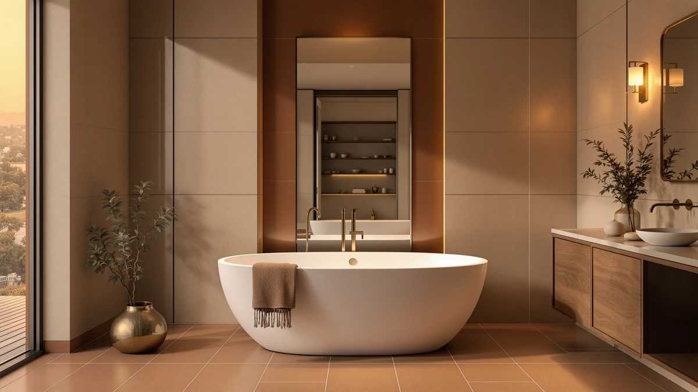

Quick Answer
This Adecab 59" high back review found its main selling point is the sloped, elevated backrest, which lets you recline instead of sitting upright the way a standard-depth freestanding tub requires. At $849.00 it costs more than the GETPRO 55", GETPRO 59", and SYLONWILL 67" tubs compared below, and Adecab does not publish capacity or interior dimensions the way some competitors do. If a reclined soaking position matters more than saving money or getting extra length, the Adecab earns its price.
Our pick: Adecab 59" High-back Acrylic Freestanding — $849.00 Check Price on Amazon
Things to Know Before You Buy
- This Adecab 59" high back review focuses on the tub's elevated backrest, since that's the feature Adecab builds its listing around rather than capacity or interior dimensions.
- At $849.00, the Adecab costs more than all three alternatives compared in this review, including one tub eight inches longer.
- Adecab does not publish water capacity, interior depth, or shell material in its listing, so buyers comparing specs sheet to specs sheet will find gaps here.
- Like every tub in this review, it ships without a drain, overflow, or faucet, so budget for that hardware separately.
- Freestanding tubs expose their plumbing connections, so confirm your bathroom's rough-in matches before ordering.
This Adecab 59" high back review looks at whether the tub's sloped backrest and $849.00 price earn it a spot in a bathroom over three other freestanding tubs we compare it against. At 59 inches long and finished in Elegant White, the Adecab is built around a high back design meant to support a reclined bather rather than the upright posture a flat-backed tub forces on you.
We priced the Adecab against the GETPRO 55", GETPRO 59", and SYLONWILL 67" covered in this review, and at $849.00 it's the most expensive of the four despite Adecab publishing less specification detail than its rivals. The question this review answers is whether the backrest design is worth that premium, or whether a cheaper or longer alternative serves most bathrooms equally well.
Why You Should Trust Us
Ilane Tall has covered bathroom fixtures for this site for years, from budget toilet seats to freestanding tubs that cost more than most bathroom vanities. For this Adecab 59" high back review, we checked Adecab's published listing details, compared current Amazon pricing across four freestanding tubs, and weighed each one against the plumbing and floor space it demands.
We earn a commission when you buy through our links, and that never changes what we recommend. When a tub has a real limitation, like Adecab's missing capacity and material specs next to more detailed competitor listings, we say so directly instead of glossing over it.
Our Research Experience
For this Adecab 59" high back review we focused on the two things that decide whether a soaking tub earns its price: what the design actually offers over a standard tub, and what it costs relative to similarly sized rivals. The Adecab's defining feature is its high, sloped backrest, built into a 59-inch acrylic shell finished in Elegant White, and that backrest is the main design difference between this tub and the flatter profiles on the GETPRO 55" and GETPRO 59" we compare it against.
Specification depth was the other variable we weighed closely. Adecab's listing does not publish water capacity, interior depth, shell material composition, or a weight rating, gaps that stood out once we lined it up against the SYLONWILL 67", whose listing spells out more of those details. A buyer who wants to compare tubs strictly on paper will find less to go on here than with some competitors.
We priced out the full setup the way any buyer would have to. The Adecab does not ship with a drain or overflow hardware preinstalled, so budget for that hardware plus a faucet, supply lines, and installation labor on top of the $849.00 sticker price, the same as with every tub in this review.
Fit and finish mattered as much in our assessment. The Elegant White acrylic finish is the only color Adecab lists for this model, and because the backrest sits higher than a standard freestanding tub, measure your bathroom's ceiling clearance and door height before you commit, especially if the space is already tight.
Overview & Specs

Adecab 59" High-back Acrylic Freestanding
What we like
- High, sloped backrest built for a reclined soak instead of the upright posture a flat-backed freestanding tub forces on you
- 59-inch acrylic shell finished in Elegant White, sized to fit the same footprint as the GETPRO 59" in this review
- Acrylic surface should resist household chemicals and cosmetic products the way most acrylic tubs do
Flaws but not dealbreakers
- At $849.00, it's the most expensive of the four tubs compared in this review, up to $50 more than the GETPRO alternatives
- Adecab does not publish water capacity, interior depth, weight, or exact shell material composition
- No drain, overflow, or faucet included, so factor that hardware into your total budget
| Material | — |
| Size | 59"(Elegant White) |
This Adecab 59" high back review found the tub builds its case on a design detail rather than raw specs. Its high, sloped backrest is meant to support a reclined bather, a posture a standard flat-backed freestanding tub doesn't offer, and the 59-inch acrylic shell comes finished in a single Elegant White colorway. Adecab's listing doesn't spell out water capacity, interior depth, or exact material composition, which makes this tub harder to compare on paper against the more detailed SYLONWILL 67" listing further down this review.
At $849.00, the Adecab costs more than every other tub we compare it against here, including the GETPRO 55" at $829.99, the GETPRO 59" at $806.44, and the SYLONWILL 67" at $799.00, the last of which is also eight inches longer. That premium buys you the backrest design and nothing else that Adecab discloses, so the tub makes the most sense for a buyer who specifically wants a reclined soak and is willing to pay for it without a full spec sheet to back up the price.
What We Liked
This Adecab 59" high back review found the backrest to be the standout feature. Adecab builds the entire listing around a sloped, elevated back panel meant to support a reclined bather, a posture none of the three flat-backed alternatives in this review are designed around.
The Elegant White acrylic finish also stood out for its simplicity. A single, clean colorway means the tub should match most bathroom fixtures without forcing a redesign around a specific hardware finish, unlike tubs that ship in a narrower or bolder color option.
Sizing consistency was another point in its favor. At 59 inches, the Adecab matches the footprint of the GETPRO 59" almost exactly, so if you've already measured your bathroom for a 59-inch tub, swapping in the Adecab shouldn't require any additional floor space.
What Could Be Better
This Adecab 59" high back review found missing specifications to be the tub's clearest limitation. Adecab does not publish water capacity, interior depth, shell weight, or a detailed material breakdown, so you're buying this tub with less information than the SYLONWILL 67" listing gives you for a similar price.
Price is the other tradeoff. At $849.00, the Adecab costs $19.01 more than the GETPRO 55", $42.56 more than the GETPRO 59", and $50.00 more than the SYLONWILL 67", which is also the longest tub in this comparison. You're paying for the backrest design, not for the lowest price or the most published detail in this review.
Hardware isn't included either. Like every tub compared here, the Adecab ships without a drain, overflow, or faucet, so factor that cost and the matching installation labor into your total budget before you commit to the $849.00 sticker price.
Who Is It For?
This Adecab 59" high back review recommends buying it if a reclined, spa-like soaking position matters more to you than a detailed spec sheet or the lowest price in this review. It suits a bather who wants to lean back rather than sit upright and is comfortable paying a premium for that design.
It also makes sense for a bathroom that's already sized for a 59-inch freestanding tub, since the Adecab matches the GETPRO 59"'s footprint without requiring any layout changes. Skip it if you want full published specs before you buy, since Adecab discloses less capacity and material detail than the GETPRO and SYLONWILL alternatives.
Buyers who want more length for a lower price should look at the SYLONWILL 67" instead. It costs $50.00 less than the Adecab while offering eight additional inches, a better tradeoff for anyone who prioritizes room to stretch out over a reclined backrest.
Alternatives to Consider
If the Adecab's $849.00 price or its missing spec sheet rules it out, the other three tubs in this Adecab 59" high back review give you a different tradeoff. Each one swaps the Adecab's reclined backrest for a lower price, a matching footprint, or extra length.

Editor’s Pick
GETPRO Free Standing Tub 55"
The GETPRO 55" is the shortest and cheapest tub in this comparison, priced $19.01 below the Adecab. It skips the Adecab's elevated backrest for a standard freestanding profile, which makes it a better fit for a smaller bathroom where every inch of floor space counts. GETPRO's listing, like Adecab's, doesn't publish detailed capacity or material specs, so you're not gaining spec-sheet transparency by choosing this tub over the Adecab, only saving money and floor space. If a compact footprint and a lower price matter more than a reclined soak, the GETPRO 55" is the pick.
$829.99
Check Price on Amazon
Best Value
GETPRO Free Standing Tub 59"
The GETPRO 59" matches the Adecab's footprint almost exactly at 59 inches, but costs $42.56 less, making it the closer comparison for anyone who has already measured a bathroom for that length. It doesn't offer the Adecab's high, sloped backrest, so bathers who want a reclined soak won't get that from this tub, but for a straightforward standard-depth freestanding tub at a lower price, the GETPRO 59" is a reasonable swap. Neither listing publishes detailed capacity or material specs, so that part of the comparison is a wash between the two.
$806.44
Check Price on Amazon
Premium Choice
67" Free Standing Tub Pure
The SYLONWILL 67" is the longest tub in this review at 67 inches, eight inches more than the Adecab, and it's also the cheapest option here at $799.00, a full $50.00 below the Adecab's price. That extra length suits a taller bather who wants to stretch out, a benefit the Adecab's high-back design doesn't provide since it prioritizes a reclined seated posture over overall room to extend your legs. If you want the most floor length for the least money and don't need a sloped backrest, the SYLONWILL 67" is the strongest pick in this comparison.
$799.00
Check Price on AmazonFrequently Asked Questions
How tall is the backrest on the Adecab 59" high back tub?
Adecab markets this tub around its sloped, elevated backrest, built to let a bather recline rather than sit upright the way a standard-depth freestanding tub forces you to. Adecab does not publish an exact backrest angle or interior depth in its listing, so if that measurement matters for your bathroom, contact the seller before you order.
Does the Adecab 59" tub include a drain or faucet?
Adecab's listing doesn't call out included drain or overflow hardware, so budget for that separately along with a floor-mount or freestanding faucet, the same requirement that applies to the GETPRO and SYLONWILL tubs in this review.
Is the Adecab 59" high back tub worth it over the GETPRO or SYLONWILL alternatives?
It depends on what you want from the soak. This Adecab 59" high back review found the Adecab's main advantage is its elevated backrest for reclined bathing, while the GETPRO 55" and GETPRO 59" cost less and the SYLONWILL 67" gives you more length for a similar price. If a reclined, spa-like posture matters more than saving $20 to $50, the Adecab is the stronger buy.
Final Verdict
This Adecab 59" high back review comes down to design versus disclosure. The Adecab wins on comfort with a sloped, elevated backrest built for reclined soaking that none of the three alternatives offer, even though it's the most expensive tub here and Adecab publishes less capacity and material detail than its rivals. If a reclined, spa-like soak matters more to you than a full spec sheet or the lowest price, the Adecab is the tub to buy. Choose the GETPRO 55" if you need the smallest footprint, the GETPRO 59" if you want the same size for less money, or the SYLONWILL 67" if extra length matters more than a high backrest.
Related Guides
If this Adecab 59" high back review didn't settle your search, these guides cover more freestanding tub options and buying advice.